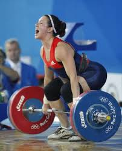
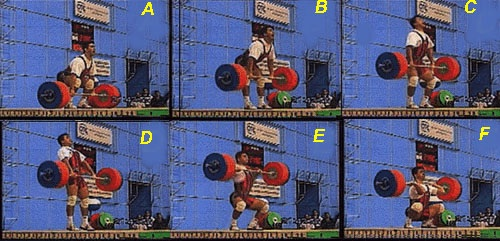
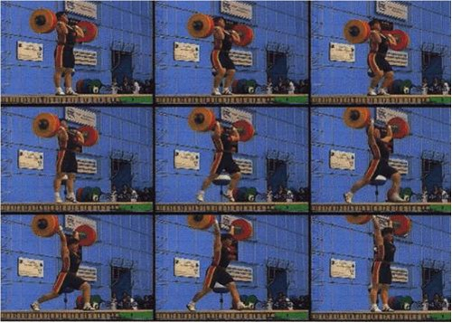

O levantamento de peso surgiu lá atrás como uma maneira simples de determinar quem era o mais forte. Mas a modalidade que se tornaria olímpica também tinha outros propósitos. Em 1.100 a.C., por exemplo, os chineses utilizavam o levantamento de peso como maneira de selecionar novos soldados para o Exército. Levantar diversos pesos era um pré-requisito para ser aceito.
Embora não tenha entrado como esporte nos Jogos da Grécia Antiga, o levantamento de peso já era praticado à época, principalmente como forma de preparação para outras modalidades. A primeira escola de levantamento de peso, no entanto, só surgiu no século 19, na Áustria. Antes disso, a prática se tornara popular como apresentação de circo na Europa e nos Estados Unidos.
Em 1887, há registros de concursos de levantamento de peso disputados na Áustria. Começaram a surgir federações — as primeiras na França e na Rússia —, e o esporte foi tomando forma. Em 1891, por exemplo, foi disputado o primeiro Campeonato Mundial de levantamento de peso, com a participação de sete atletas de seis países diferentes.
O levantamento de peso entrou no programa olímpico desde o início da era moderna. Em Atenas-1896, a disputa ainda não era dividida entre categorias de peso. Isso ocorreu pela primeira vez nos Jogos da Antuérpia-1920. As mulheres só começaram a competir nas Olimpíadas de Sydney-2000.
O levantamento de peso, também conhecido como halterofilismo, é um esporte olímpico que consiste em levantar a maior quantidade de peso possível acima da cabeça. A competição é composta por duas provas: o arranco e o arremesso, e a carga levantada em ambas é somada para obter o total de cada atleta
O halterofilismo (ou levantamento de peso olímpico) teve as suas primeiras competições no Brasil realizadas no ano de 1910. Já em 1946, foi criada a Liga Força e Saúde na cidade do Rio de Janeiro, e, no ano seguinte, o nome da entidade foi mudado para Federação Metropolitana de Halterofilismo.
O esporte também foi organizado nos estados de São Paulo, Minas Gerais e Rio Grande do Sul. A Confederação Brasileira de Levantamento de Peso viria a surgir em 1980.
Em 2011, durante os Jogos Pan-Americanos de Guadalajara, o halterofilista Fernando Reis conquistou pela primeira vez na história de participações brasileiras, uma medalha de ouro, ao levantar o total de 410 kg (185 kg no arranque e 225 no arremesso), quebrando o recorde Pan-Americano.
A primeira evidência esportiva da modalidade no Brasil apareceu por volta de 1898 na cidade de São Paulo , quando um grupo de alemães fundou o Deutscher Athleten Klub.
A maior colocação brasileira em uma olimpíada foi a de Waldemar Viana da Silveira em Helsinque 1952 quando ele levantou 362 kg, e ficou em 12º lugar.
As atletas Laura Amaro, 23, e Amanda Schott, 27, farão suas primeiras participações nos Jogos Olímpicos de verão, em Paris 2024, representando o Brasil no levantamento de peso que disputam em duas modalidades: o arremesso e o arranco, que exigem técnica, flexibilidade e equilíbrio.
As categorias de peso do levantamento de peso olímpico são:
Homens: 61 kg, 73 kg, 89 kg, 102 kg, +102 kg
Mulheres: 49 kg, 59 kg, 71 kg, 81 kg, +81 kg
 O Arranco (“snatch”) é a primeira prova da competição de LPO e consiste em levantar a barra em um só movimento desde o tablado até a completa extensão dos braços acima da cabeça. Para executá-lo o atleta pega a barra e a levanta à maior altura possível. Em seguida agacha completamente posicionando a barra acima da cabeça com os braços estendidos e finalmente se coloca de pé imóvel até o sinal dos árbitros para baixar a barra (figura). Essa é a técnica executada pelos levantadores de peso em competição, fazendo o agachamento profundo para pegar a barra acima da cabeça, sendo conhecido como “arranco clássico” ou “competitivo”.
 O Arremesso (“clean and jerk”) na sua forma “clássica” ou “competitiva” consiste em levantar a barra em dois tempos: desde o tablado até o peito primeiro tempo (“clean”). E desde o peito até a completa extensão dos braços acima da cabeça segundo tempo (“jerk).Para executar o primeiro tempo o atleta pega a barra na plataforma, levanta à maior altura possível e em seguida agacha profundamente para colocá-la sobre os ombros (figura).
A puxada do arremesso é praticamente idêntica a do arranco, sendo possível erguer mais peso em função da pegada das mãos na barra mais próxima. O apoio da barra nos ombros acorre com a rápida rotação dos cotovelos embaixo da barra.
Nome: Sofrid Koanda | 81kg | Noruega, Peso Total levanntado: 275kg
Nome: Sara Ahmed | 81kg | Egito, Peso Total levantado: 268kg
Nome: Neisi Dajomes | 81kg | Equador, Peso Total levantado: 267kg
Nome: Olivia Reeves | 81kg | Estados Unidos, Peso Total Levantado: 258kg
Nome: Yudelina Mejia | 81kg | República Dominicana, Peso Total Levantado: 244kg
Nome: Laura Amaro | 81kg | Brasil, Peso Total levantado: 242kg
Nome: Li Wenwen | 76kg | China, Peso Total Levantado: 320kg
Nome: Sarah Rolbes | 76kg | Estados Unidos, Peso Total Levantado: 282kg
Nome: Karla L.J.Díaz | 76kg | Cazaquistão, Peso Total Levantado: 245kg
Nome: Li Wenwen| 76kg | China, Peso Total Levantado: 276kg
Nome: Karla L.J.Díaz | 76kg | México, Peso Total Levantado: 246kg
Nome: Darya Naumava | 76kg | Bielorrússia, Peso Total Levantado: 240kg